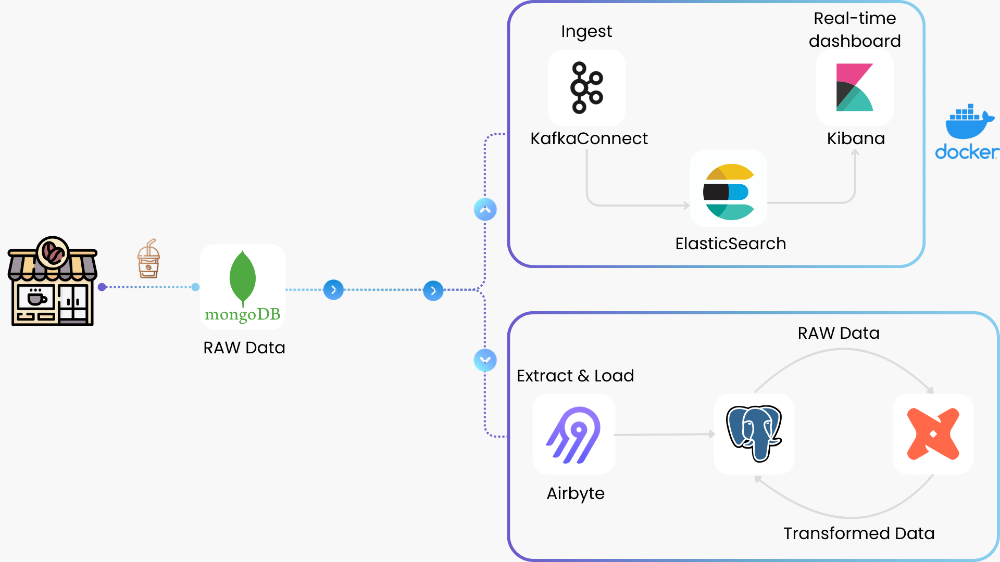

COFFEE SALES HYBRID DATA PIPELINE
Overview

📕 Table Of Contents
⚙️ Local Setup
1. Prerequisites
Install Docker.
Install Python.
Install PostgreSQL.
Install self-hosted MongoDB or MongoDB in Cloud.
Create an Airbyte account.
- Clone, fork, or download this GitHub repository on your local machine using the following command:
git clone https://github.com/lnynhi02/coffee-sales-data-pipeline.git
2. Project Structure
coffee-sales-data-pipeline/
├── connectors/ # Kafka Connect configuration files
│ ├── elasticsearch-sink-connector.json # Sink connector for Elasticsearch
│ ├── generate-mongo-connector.py # Script to create MongoDB source connector
├── dbt-project/ # DBT project for data transformation
│ ├── coffee_dw/ # Data warehouse managed by DBT
│ │ ├── seeds/ # Static seed data
│ │ │ ├── payment_method/ # Payment method details (CSV, schema)
│ │ │ ├── product/ # Product details & categories (CSV, schema)
│ │ │ ├── store/ # Store details (CSV, schema)
│ │ ├── models/ # DBT models
│ │ │ ├── staging/ # Load raw data from PostgreSQL
│ │ │ ├── marts/ # Transformed data models
│ │ │ │ ├── dimensions/ # Product, store, payment_method
│ │ │ │ ├── facts/ # Sales data
│ ├── dbt_project.yml # DBT project config
│ ├── packages.yml # DBT dependencies
│ ├── profiles.yml # DBT database connection config
├── scripts/
│ └── mongodb_data.py # Streams data to MongoDB
├── docker-compose.yml # Docker Compose for service orchestration
├── config.ini # MongoDB connection details
└── run-pipeline.ps1 # Script to run the pipeline
- Create a virtual environment:
python -m venv venv - Activate the virtual environment:
- Windows PowerShell:
venv\Scripts\Activate - Linux/macOS:
source venv/bin/activate
- Windows PowerShell:
- Install the necessary package:
pip install pymongo
⚡ Streaming Pipeline
Visit this for more details.
⏳ Batch Pipeline
Visit this for more details.
📝 Documentation
Visit this for more details.